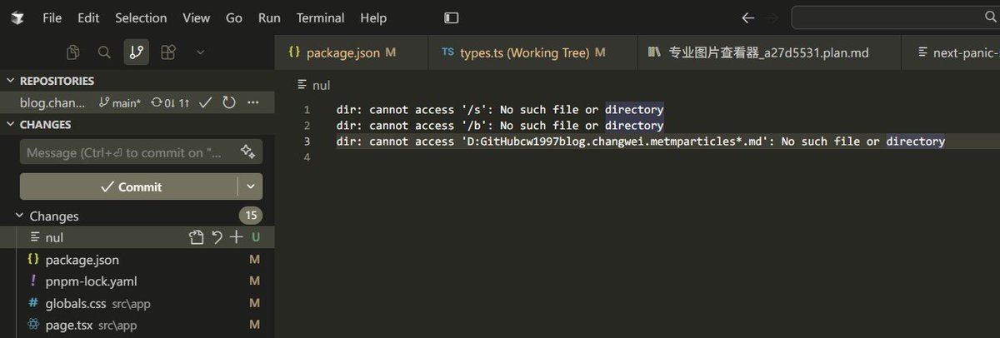

@changwei1006 并非 bug。
Windows 保留设备名冲突 + 跨平台 Shell 混用导致的。 在 Linux 中，丢弃输出通常写向/dev/null。在Windows中，有些代码或配置文件为了达到同样的效果，被错误地硬编码为写入名为 nul 的路径。因为名字是保留字，Windows 资源管理器（图形界面）在处理它时会发生混淆，导致无法直接删除。

Windows 保留设备名冲突 + 跨平台 Shell 混用导致的。 在 Linux 中，丢弃输出通常写向/dev/null。在Windows中，有些代码或配置文件为了达到同样的效果，被错误地硬编码为写入名为 nul 的路径。因为名字是保留字，Windows 资源管理器（图形界面）在处理它时会发生混淆，导致无法直接删除。

目前用OpenCode遇到的BUG
经常会莫名其妙自动创建一个名为nul的文件，然后这个文件内容都是一些奇奇怪怪的报错
而且因为这个文件的存在，会导致turbopack无法正确打包
还无法用普通方式删除，需要在特定编辑器或者用命令行删除
暂时还不太清楚产生原因是什么，改天我去发起或者寻找OpenCode的issue看看 https://t.co/RqjTimTjUD https://t.co/tunKDZfxmx
经常会莫名其妙自动创建一个名为nul的文件，然后这个文件内容都是一些奇奇怪怪的报错
而且因为这个文件的存在，会导致turbopack无法正确打包
还无法用普通方式删除，需要在特定编辑器或者用命令行删除
暂时还不太清楚产生原因是什么，改天我去发起或者寻找OpenCode的issue看看 https://t.co/RqjTimTjUD https://t.co/tunKDZfxmx